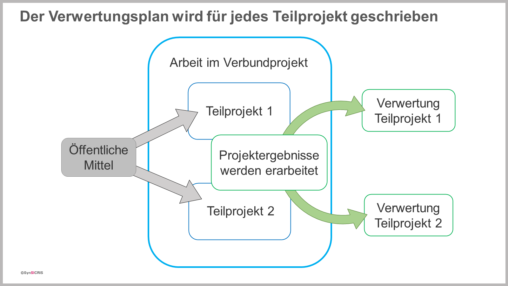

Was ist eigentlich Verwertung?
Verwertung ist die Nutzung der Projektergebnisse. Da Sie als Zuwendungsempfänger öffentliche Fördermittel erhalten, soll nicht „nur“ geforscht werden, sondern Ergebnisse sollen auch genutzt werden.
Eine Verwertung kann sowohl durch Sie als Zuwendungsempfänger als auch durch die Verwertungsmöglichkeiten, die für Dritte bestehen, erfolgen.
Mit der Nutzung der Projektergebnisse sollen Vorteile entstehen, die zum Erreichen der jeweiligen Förderziele beitragen (z.B. Steigerung der Wettbewerbsfähigkeit von KMU, verbesserter Umweltschutz etc.).Warum muss ein Verwertungsplan erstellt werden?
Grundsätzlich sollen im Verwertungsplan Nutzungsabsichten und –möglichkeiten für die Projektergebnisse sowie damit erzielte Vorteile beschrieben werden. Das dient verschiedenen Zielen:
- Die mögliche Verwertung soll von Ihnen durchdacht und beschrieben werden, damit bereits im Projektverlauf Weichenstellungen und Aktivitäten für eine spätere Nutzung der Projektergebnisse erfolgen können.
- Die Förderwürdigkeit des Vorhabens wird u.a. daran geprüft, ob die geplante Verwertung zu den Förderzielen beiträgt.
- Ihre spezifischen Verwertungsrechte und -pflichten können vom Projektträger festgelegt und geprüft werden. Deshalb muss der Verwertungsplan auch von jedem Zuwendungsempfänger / Teilprojekt separat erstellt werden.

Verwertungsrechte und -pflichten?
- Bei einer öffentlichen Förderung eines Projektes bleiben Sie (als Zuwendungsempfänger) Urheber der Projektergebnisse und besitzen das Recht auf die Nutzung der Projektergebnisse, haben jedoch gegebenenfalls auch eine Verwertungspflicht.
- Die konkreten rechtlichen Bedingungen unterscheiden sich zwischen den einzelnen Förderlinien. Beachten Sie deshalb die exakten rechtlichen Vorgaben in der Bekanntmachung und im Zuwendungsbescheid.
- Beispiel für den Fokus auf die wirtschaftliche Förderung:
Wenn Ihnen alleinige Nutzungsrechte an den Projektergebnissen zugesprochen werden, ist die Anmeldung von Schutzrechten (z.B. ein Patent für eine Erfindung) eine wichtige Maßnahme, um diese gegenüber anderen Unternehmen abzusichern. Der Fördermittelgeber kann verbunden mit den Nutzungsrechten auch eine Verwertungspflicht festlegen, d.h. Sie sind verpflichtet die Ergebnisse in der im Verwertungsplan beschriebenen Weise zu nutzen. Falls Sie die Ergebnisse nicht verwerten, kann das im schlimmsten Fall dazu führen, dass Ihnen das alleinige (exklusive) Nutzungsrecht entzogen oder sogar die Zuwendung zurückgefordert wird. - Beispiel für den Fokus auf eine breite gesellschaftliche Nutzung der Ergebnisse:
Wenn eine Veröffentlichungspflicht besteht, haben Sie keine ausschließlichen, sondern nur eingeschränkte Nutzungsrechte. Dann könnte eine Anmeldung von Schutzrechten sogar kritisch gesehen werden. Es wird vielmehr erwartet, dass Sie im Verwertungsplan beschreiben, wie die Ergebnisse für Dritte optimal zugänglich und nutzbar gemacht werden und wie Sie Zielgruppen aktiv erreichen wollen. - Deshalb ist es wichtig, dass die projektbeteiligten Einrichtungen im Verwertungsplan darlegen, wie sie Ergebnisse verwerten möchten, ob Schutzrechte für die ausschließliche Nutzung angemeldet werden sollen oder ob und wie die Projektergebnisse frei zugänglich gemacht und verbreitet werden.
- Grundsätzlich gibt es somit in jedem Projekt den Auftrag, Verwertung zu betreiben, d.h. die Projektergebnisse zu nutzen oder für Dritte nutzbar zu machen. Dies soll mit möglichst konkreten und realisierbaren Ziele, Ergebnissen und Umsetzungsschritten im Verwertungsplan beschrieben werden.
Verwertungsplan – von der Skizze bis nach dem Projektende
- Erste Angaben zur Verwertung haben Sie bereits in der Skizze gemacht.
- Im Antrag konkretisieren Sie weiter, wie die angestrebten Ergebnisse und Erkenntnisse zukünftig (nach Projektende) verwertet werden können.
- Der Verwertungsplan ist jedes Jahr mit dem Zwischenbericht zu aktualisieren (fortzuschreiben). Das bedeutet: Sie arbeiten in den bestehenden Verwertungsplan Änderungen ein, die sich aus den im Projekt gewonnenen Erkenntnissen oder Erfahrungen ableiten (z.B. weil eine Testvariante bessere Effekte erzielt oder Grenzen in der Umsetzbarkeit identifiziert wurden). Sie konkretisieren jedes Jahr die geplante Verwertung und Sie ergänzen neue Verwertungsmöglichkeiten, die im Projektverlauf identifiziert wurden. Dadurch wird der Verwertungsplan im Projektverlauf immer detaillierter und präziser.
- Der letzte Verwertungsplan erfolgt (je nach Vorgabe des Fördermittelgebers) mit dem Schlussbericht oder 2 Jahre nach Projektende.
- Jeder Verwertungsplan kann jederzeit im Monitoring-Tool verändert werden. Wenn Sie eine Version für den Fördermittelgeber freigeben, wird diese Version schreibgeschützt archiviert. Angaben aus vorangegangenen Jahren sind folglich weiterhin abrufbar und gehen nicht verloren.